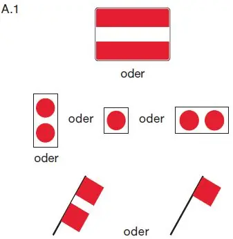
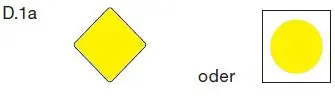
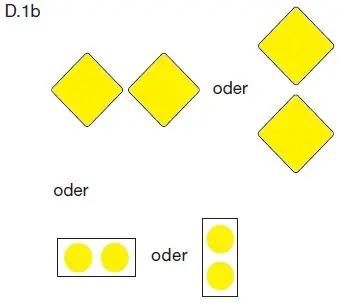

§ 6.25 Durchfahrt unter festen Brücken
Binnenschifffahrtsstraßen-Ordnung
1. Ist eine bestimmte Öffnung fester Brücken durch ein allgemeines Zeichen A.1 (Anlage 7) gekennzeichnet, ist das Durchfahren dieser Öffnung verboten. |  |
2. Ist eine bestimmte Öffnung fester Brücken gekennzeichnet
a) durch das Zeichen D.1a (Anlage 7) |  |
oder
b) durch das Zeichen D.1b (Anlage 7) – angebracht über der Brückenöffnung – |  |
wird empfohlen, vorzugsweise diese Öffnung zu benutzen. Ist die Öffnung nach Satz 1 Buchstabe a gekennzeichnet, ist die Durchfahrt in beiden Richtungen erlaubt; ist sie nach Satz 1 Buchstabe b gekennzeichnet, ist die Durchfahrt in Gegenrichtung verboten.
3. Ist eine bestimmte Öffnung fester Brücken nach Nummer 2 gekennzeichnet, kann die Schifffahrt die nicht gekennzeichneten Öffnungen auf eigene Gefahr benutzen.